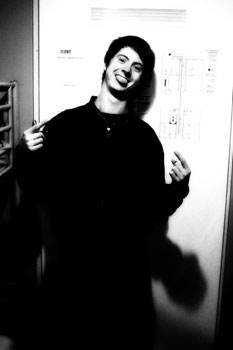
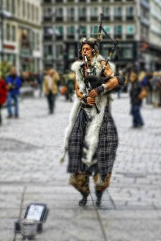

Vienna, Austria
October 2011
My stay at Vienna was “alright.” Austria is too similar to Germany, I mean, they mostly speak German here. It rained a lot when I was there which was no fun. I suppose Vienna would be wonderful for people that love music and opera. It used to be the capital of the Hamsburg empire, and then known for its contribution to classical music. Mozart is a hot shot here and Viennese waltz is of course well known. I stayed in a hostel and had a very interesting experience. On my first night there, I had a bunk bed on top and the people below me were having sex around midnight. I don’t really know how they did it because the small room was occupied by 4 other people including myself. At first I thought it was an earthquake, and then I realized it wasn’t. Anyway I quickly befriended one of the guys in the hostel named Stefan. Stefan looks exactly like Harry Potter. I mean, if they decided to make another Harry Potter movie and Daniel Radcliffe had an accident, Stefan could easily be casted. He’s very genuine and kind and taught me a lot. Did you know that college in Austria and Germany is free? Well, not free “free” because they still pay tax, but free enough that money isn’t a concern for college. All male in Austria have to do a “civil service” around the age of 19 where they serve 6 months in a non-combat army and 9 months in red cross. Because the tuition is free, education matters a lot and society class is prominent. I asked Stefan if my Austrian girlfriend’s parents would dislike me because I didn’t have a college degree, and he replied saying I wouldn’t even have a girlfriend without my degree. In Germany, a bachelor degree is useless and almost everyone goes for a master’s, although their system is different than ours. I’m not quite sure, but I think 5 years is a master’s. Also, the country has a very nice policy regarding to unemployment. If you work for a company for more than 6 months, quit, and can’t find another job, the government gives you a fancy stipend (enough for a good living) until you find the next job. In other words, you could live happily by freeloading off the country’s aid and bouncing jobs around for as many times as you want.
In Vienna, I went to a residential house called “Hunderwasserhaus” which literally means hundred water house. Hunderwasser is the name of the famous architect whose philosophy opposed straight lines and simple color in modern architecture. It sounds weird to go to a house in a foreign country but Hunderwasserhaus is actually one of the main attractions in Vienna. The city is full of palaces such as Hofburg and Schronbrunn and rich in museum. On my last day it rained the entire day. I had a train to catch at 12:09 AM so I checked out my hostel and didn’t have a place to stay. That day was bad. I didn’t know where I was going or what I was doing. I really was a lost, confused boy, walking around the endless streets without an umbrella. I finally found shelters in two museums; a famous art museum and a natural history museum. I think the most unexpected fact in my life is that I actually an art guy. I happened to have taken many art classes in college, some for credit some for fun. I don’t necessary like art, but I appreciate it. The Leopold museum housed many famous art pieces and was I exposed to “sound art” for the first time –that exhibition was a recorded conversation from various sex calls. The natural history museum of Vienna was so big. It was my first time at any natural history museum and I spent almost half a day there. A riddle; what smells with its antenna, tastes with its feet, and digest food outside the body? A fly! I took a night train that day to Munich, which was an experience. I had always wanted to try that, to sleep on a couch bed on a train. It’s a good lesson; if I want to save money I could book a night train, that way I could have both shelter and transportation to my next destination. All the waiting never affected me because I had my kindle with me. That thing was such a great investment, a true time killer. I finished one whole book by the end of my travel.